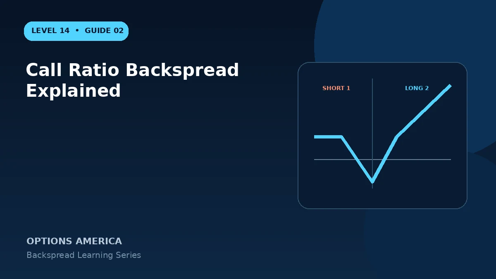

Understand the 1-by-2 call backspread, its upside potential, downside result, maximum-loss area and two breakevens.
Construction
Sell one lower-strike call and buy two higher-strike calls with the same expiration. The lower short-call premium finances part or all of the two OTM long calls.
Expiration outcomes
Below the short strike, all calls expire worthless and the result is the initial credit or debit. Between strikes, the short call loses intrinsic value while both long calls remain worthless, creating the loss slope.
Above the long strike
The two long calls gain twice as fast as the single short call loses. Net exposure becomes one additional long call, so upside profit is theoretically unlimited after the upper breakeven.
Operational risk
The short call may be assigned early, particularly around dividends. If one long call is sold or expires differently, the intended ratio and risk can change substantially.
A practical example
Sell one 100 call for $6 and buy two 105 calls for $2.90 each. The $0.20 credit is retained below $100, maximum loss occurs at $105 and upside profit grows above the upper breakeven.
This simplified example focuses on selected expiration outcomes; live prices and risks will differ. Live option prices also reflect the underlying price, time decay, rates, dividends, liquidity and transaction costs. Greeks are theoretical estimates, not guarantees.
Turn the payoff into a trading plan
Before entering call ratio backspread explained, write down the stock price, both strikes, expiration, contract ratio and total opening credit or debit. Then calculate the quiet-side result, maximum loss at the long-option strike and the far-move breakeven. These three checkpoints make the position easier to monitor and help prevent the attractive tail payoff from hiding the loss valley.
Test at least five scenarios: no move, a move to the short strike, a move to the long strike, a move to breakeven and a move well beyond breakeven. Repeat the exercise with implied volatility higher and lower and with less time remaining. The resulting range is more useful than a single payoff line because a live backspread can change substantially before expiration.
Finally, define the catalyst, maximum acceptable loss, review date and closing method in advance. Use one multi-leg order whenever possible, confirm every fill and recalculate the remaining position before changing any leg. Assignment, liquidity and transaction costs belong in the plan even when the expiration loss appears defined.
Frequently asked questions
Is it bullish?
Yes, it seeks a large upside move.
Can it profit if stock falls?
A credit entry can retain a small profit below the short strike.
Where is the worst price?
Near the long-call strike at expiration.
Continue the Backspread Strategies cluster
Explore related guides: Put Ratio Backspread Explained · How to Choose a Backspread Option Ratio · Backspread Greeks: Delta, Gamma, Theta and Vega. For a structured sequence, use the free Level 14 – Backspread course.
Options involve risk and are not suitable for every investor. This material is educational and is not investment, tax or legal advice. Greeks are theoretical estimates, and contract terms and broker requirements can vary.